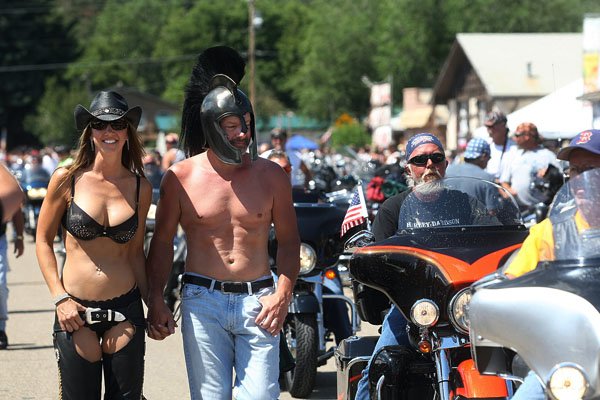

< < < Back
The Truth About The Sturgis Motorcycle Rally – Return Of Kings
No doubt you have seen, since you were a wee little babe, all the hubbub and kerfuffle about the “Sturgis motorcycle rally.”
Be it documentaries, rumor, or cameo showcases in the media “Sturgis” is embedded in the minds of all young men as a magical place of motorcycles, leather-clad women, booze, drugs, Aerosmith, and anything goes.
Sorry to let you down boys. It just ain’t so.
Maybe back in the 60’s it was a riot. Perhaps in the 70’s it was great. And I’m sure there’s some wild crazy parties going on during the rally today. But the truth is the Sturgis Rally has seen its days and it’s pretty much over. The reason is two fold.
One, whatever hot girls attended the convention have long gotten old and saggy. There is no new blood coming into the rally and (as an economist I’m serious when I say this) Harley Davidson has some serious legacy issues to consider. The average age of a Sturgis goer is about 52 and the only young people (hot chicks included) are usually brought in as staff. All those video you see on TV? Yeah, take your eyes off of the bartender from Raleigh trying to earn tuition for the year with the pronounced cleavage and look at all the people behind her. It’s usually an AARP sausage-fest in the background.
Two, posers. Fucking posers. Not to lay down too much motorcycle culture on you, there are two types of people. Those who ride and those who haul. Those who ride drive their bikes to the rally no matter where they’re from. I’ve seen serious, hardcore bikers from Mexico come up, driving their hogs from south of the border. Then I’ve seen pansy-assed pussy bankers from Fort Collins, buy a brand new Harley, haul it in their brand new Ford Expedition trailer with Ma and “cutsie puke-inducing” matching helmets, ride their bike a whopping 200 miles over the weekend, only to haul it back to Denver in the same day. Not only are they old, fake, weak, and pathetic, they’re dangerous on the road as they’re poorly-skilled, aging baby boomer, motorcyclists trying to complete a bucket list indifferent as to whether they endanger veteran riders at the rally.
In short, Sturgis has become nothing more than the state fair. Fat, conventional, cliche, and common. You just need a bike and you’re there.
However, this does not mean the town of Sturgis and the Black Hills area itself isn’t worth it.
To this day I am shocked and surprised how few people know about the Black Hills, Badlands National Park, and Deadwood. But while most people write off South Dakota as another white bred, boring, hicksville state, the far west side of the state is by far the most beautiful country in the country. The peaks are not too tall that you have to worry about snow in July. The Badlands are one of the genuinely unique national parks that everybody must visit. The landscape is dotted with abandoned mining towns with a bar that nobody will ever find you at. And if you have any inkling of patriotism and love for the US, I don’t know how you can leave this planet without visiting Mount Rushmore. But the key to avail yourself of this mandatory country is, above all else, to AVOID THE STURGIS RALLY.

The sad truth is that the Sturgis rally, which made the Black Hills what it is, denies it its best features. You don’t want to go to Sturgis for the rally, you want to go there for the wide open west. You don’t want to go there to be part of the crowd, you want to go there to be alone with your thoughts at some no name bar. You want to pilot your bike through the Spearfish Canyon and the Needles Highway unencumbered. You want to ride peacefully through the Badlands. And you can’t do that when 750,000 motorcyclists are occupying a highway system that is normally designed to support a population of only 100,000.
So my advice to you, motorcycle enthusiast or not, is to visit Sturgis, but a solid two weeks before or after the rally. You really aren’t missing anything, unless you have a serious hankering for flabby, wrinkly, baby boomer ass.
Read Next: The Hands Of Man